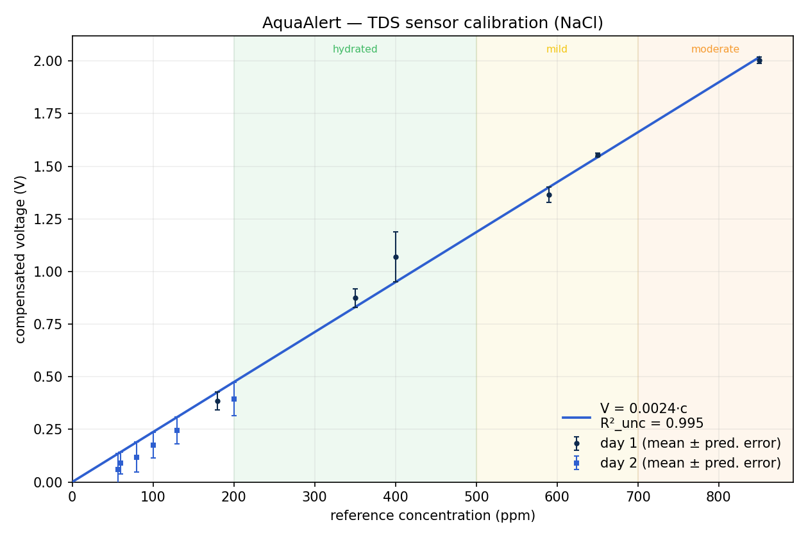

AquaAlert is a smart-bottle prototype that measures salivary conductance (TDS) and streams a calibrated reading to a web app over Bluetooth. This page documents the device as built; the ankle bioimpedance wearable and caregiver console are designed but not yet implemented.
Today's hydration sensors (Nix, hDrop, Epicore, Kenzen) are built around sweat — a signal designed for endurance athletes and outdoor industrial workers. Older adults sweat less, feel thirst less, and are precisely the cohort for whom that approach fails.
AquaAlert measures saliva instead. Salivary ionic conductance (TDS) rises measurably under early water deficit, as established in the literature (see Evidence). This prototype implements the bottle side of that approach with an ESP32 and a commercial TDS sensor, calibrated against NaCl standards across the salivary clinical range.
The bottle samples the sensor at 25 Hz with a 30-sample median filter, applies temperature compensation, and notifies the calibrated TDS reading once per second over Bluetooth Low Energy. A web client (no app store, no pairing) plots it live and classifies the value against the HydroSense salivary bands.
Designed but not implemented in this iteration: the ankle bioimpedance wearable, the multimodal fusion algorithm, and the caregiver console. The current scope is the bottle sensor itself, end to end: from electrode to phone.
Twelve NaCl solutions across the salivary range (57–850 ppm) were measured with 3–4 replicates each across two sessions. The least-squares fit forced through the origin (V = m·c, with the physical zero set by the auto-tare on each boot) yields R² = 0.995 and a sensor sensitivity of 2.37 mV/ppm.

AquaAlert builds on the salivary TDS approach published in HydroSense (IJSRSET 2025), and adopts the hydration thresholds reported in its experimental results table. Where HydroSense uses unspecified sensors on Arduino, AquaAlert documents the full hardware stack and contributes a formal NaCl calibration of the sensor with R², sx0, and LOD/LOQ.
No app store, no pairing, no cloud. Open the page on Chrome or Edge (Android, macOS, Windows or Linux), choose the AquaAlertBottle device, and watch the ppm rise as salt is added to a glass of water.
Open the live viewer